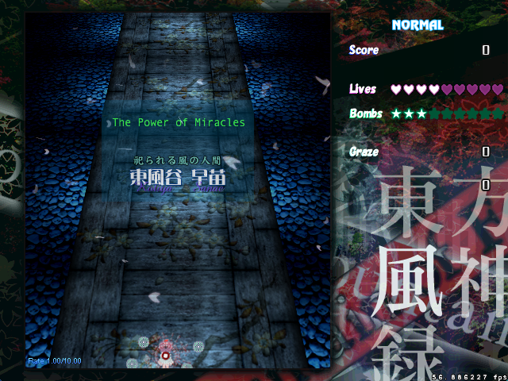

RANGE 10: SANAE BOSS BATTLE
RELEASE INFORMATION
Release Date: September 1, 2013
Download: Download RC-1 (September 1, 2013)
Install: Place the unarchived directory within the 'script' directory of your copy of Touhou Danmakufu 0.12m
Official Post: Click Here for Information
Contest Page: Click Here for Information
GAMEPLAY AND SYNOPSIS
My RaNGE 10 Contest Entry is a standard Touhou-esque vertical scrolling shooter. There are three difficulty options - Normal, Miracle, and Abnormal, where Abnormal Difficulty is slightly different gameplay-wise. Normal difficulty is between typical Touhou Easy and Normal difficulties while Miracle is between Normal and Hard.
As a standard boss battle, there are no real gimmicks, although you do collect points for extends and whatnot (as a vestige of the PokéDigiDanmaku system that this script used). The recommended player is my 0.12m Kogasa Player script, although the script is balanced for standard players.
ADDITIONAL NOTES
[November 18, 2015]
My RaNGE 10 Sanae entry is undoubtedly the best script I ever made in Touhou Danmakufu 0.12m. It holds a number of distinguishing factors - one being my first script with a fully functional 3D background, another being my most original 0.12m script, and a final one being the start of my DNHArt playlist. Release post here. This entry won third place in the contest (technically fourth since there were two entries tied for first).
Fun fact: This is the video I showed off during my MIT interview. I was later rejected, but that doesn't really matter - this is me at my best and no matter how painful the development process was, the end result was worth it - pretty good danmaku, relatively balanced difficulty, and a beautiful 3D background rendered using my own skill.
LEGAL AND CREDITS
The Touhou Project is owned by Team Shanghai Alice (ZUN). Various graphics in this game are not original and originate from official and Touhou Project games.
I do not and will not allow unauthorized redistribution of this game and/or use of original code/assets without express permission.